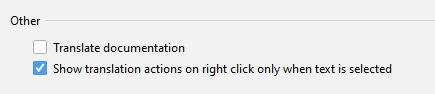

Version 3.1 (2020-04-13)
Welcome toTranslation v3.1, which includes the following major updates:
- Documentation translation actions - Documentation translation actions have been added to the documentation context menu
- UI synchronized scrolling - Synchronized scrolling between the original text and the translated text
- User experience modifications - Some of the default behaviors of the plugin have been adjusted
Translation
Documentation translation
Actions for documentation translation have been added to he context menu for the Quick Documentation and for documentation embedded in the editor (IDE 2020.3+):


Summary
UI synchronized scrolling
Synchronized scrolling between the original and translated texts

User experience modifications
We always try to find a balance between the discoverability of a feature and the simplicity of the UI, which usually means that when a feature is unlikely to be used, the relevant UI elements will not be displayed in the context menu.That's why we have made some adjustments in this regard.
-
Context menu
The translation action always appears at the top of the context menu, so when we are looking for other actions, it can be distracting.

So we made some adjustments — the context menu now only displays the translation action only when text is selected.(Automatic selection will still work if the action is called using a shortcut, so there is no need to select the text)
Of course, if you're not used to these actions, you can modify them on the Settings page.

-
Translate engine widget
The translation engine widget is displayed only when more than one translation engine is available.
-
Glossary tool window
The Glossary tool window is hidden when the Glossary is not available or there are no words in the Glossary.
Acknowledgements
Thank you very much to the following people who have contributed to this version: